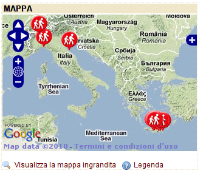
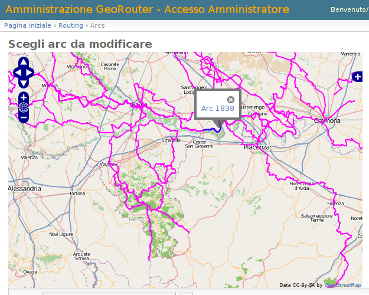
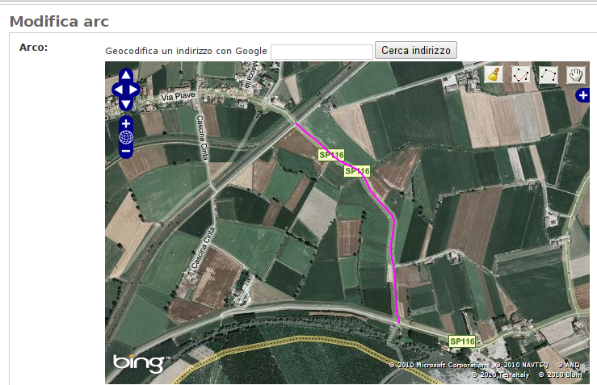
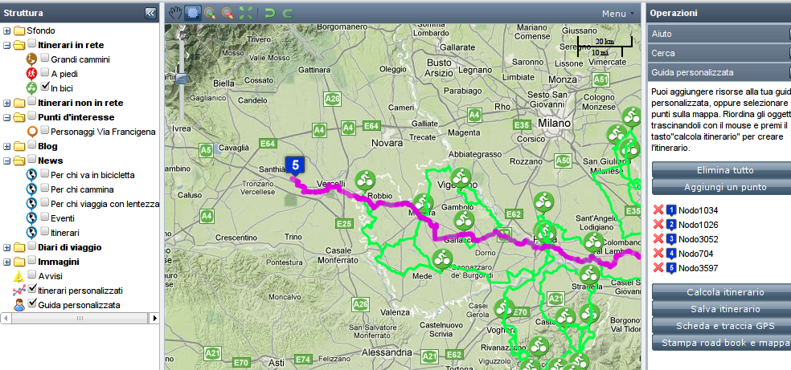
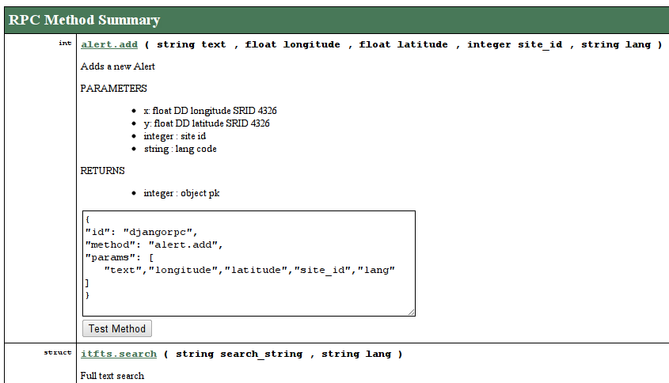
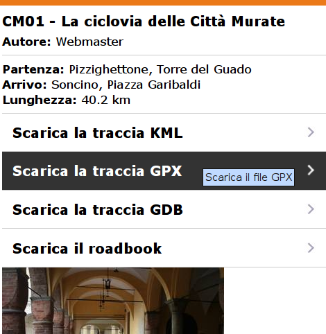
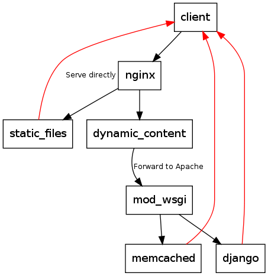

GeoDjango + PGRouting + GeoExt Studio di un caso: GeoRouter
Alessandro Pasotti (apasotti@gmail.com)
Licenza: Creative Commons Attribuzione - Condividi allo stesso modo 3.0
Premesse
- Il cliente esegue rilievi in campo di sentieri e percorsi con finalità di turismo "dolce" e "sostenibile"
- Committenti: APT, Ministero, altre PPAA
- I rilievi sono corredati da:
- immagini georeferenziate,
- descrizione di tutti i nodi in entrambe le direzioni
- tempi di percorrenza a piedi e in bicicletta
- caratteristiche del fondo stradale
- percentuale di percorribilità in bicicletta
- relazioni sul percorso
Obbiettivo:
Realizzare un gruppo di siti per visualizzare i percorsi e le risorse turistiche del territorio
Caratteristiche
- Oltre ai percorsi, il portale deve gestire altre risorse, eventualmente georeferenziate:
- Blog
- POI
- News
- Strutture ricettive
- Viaggi a tappe
- Diari di viaggio
- Foto
- ...
- Mappa embeddable
- Interoperabile tramite WS
Altre caratteristiche
- Accessibilità (non completato)
- Multisito (un solo DB, N siti), possibilità di pubblicare un contenuto su più siti
- Attivazione di nuovi siti (domini) da pannello di controllo
- Multilingua
- Rivendibile: pannello di controllo cliente, con accesso limitato
- Routing (inizialmente anche ibrido)
- Versioni Mobile
- Output in diversi formati GIS:
- GML
- KML
- GPX
- GDB (Garmin)
Tecnologie

- GeoDjango
- RPC4Django
- PostGIS
- PG-Routing
- GeoExt
Multisito
- Django non supporta multisito in una singola istanza!
- Middleware per modificare SITE_ID e altri parametri di configurazione dipendenti dal sito
- Middleware per la cache sito-specifica
- Modifiche al pannello di controllo per (applicazione admin) per l'accesso staff con amministrazione di un singolo canale
- Custom manager per mostrare solo le risorse pubblicate sul sito
Multilingua
- Django non supporta contenuti multilingua
- Applicazione transmeta, modificata per avere setter e getter e default nullo su campi obbligatori
- Custom manager su tutte le applicazioni per mostrare solo le risorse tradotte nella lingua desiderata (controllo sui campi obbligatori)
Routing
- Routing sulla rete interna (arco-nodo)
- Guida virtuale con POI e altre risorse
- Generazione roadbook
- Routing ibrido con dati Google e interni
- Creazione itinerari
Applicazioni Django utilizzate
| Applicazione | Uso | Mod. ? |
|---|---|---|
| Photologue | gestione gallerie di foto | Si |
| OlWidget | widget openlayers | Si |
| LocaleURL | localizzazione | Si |
| Transmeta | traduzione contenuto | Si |
| RPC4Django | WS XML-RPC / JSON-RPC | No |
| Avatar | avatar | No |
| Tagging | tags | No |
| Profiles | profili utente | No |
| Registration | registrazione utenti | No |
| Gatekeeper | moderazione | Si |
| TinyMCE e FileEditor | GUI | No |
| Treemenus | menu | Si |
| MPTT | albero di categorie | No |
Applicazioni Django sviluppate
| Applicazione | Uso |
|---|---|
| GeoExt | GUI mappa front-end |
| ItFTS | Full Text Search |
| ItCMS | Funzioni CMS |
| ItSites | Gestione multisito |
| Routing | Routing |
Mappe: OlWidget
http://olwidget.org/ olwidget is a javascript library that makes it easy to add editable maps to forms. It operates by replacing a textarea with an editable map, and writes WKT data back to the textarea for processing.
Mappe: OlWidget admin
Mappe: OlWidget admin 2
Mappe: GeoExt
http://www.geoext.org/ JavaScript Toolkit for Rich Web Mapping Applications
Il routing
- Calcolo dei tempi di percorrenza (a piedi e in bici)
- Routing tramite PG-Routing
- Routing ibrido tramite Google
- Roadbook
- Profilo altimetrico con Google Charts
RPC WS: RPC4Django
Mobile
Mobile
Deployment
- slice su VM XEN USA
- GIT
- nginx proxy per la parte statica
- mod_wsgi
- memcached
Problemi
- Deployment complesso
- WSGI thread singolo, multiprocesso
- Occupazione di memoria
- Caching essenziale!
- Dati vettoriali nella mappa